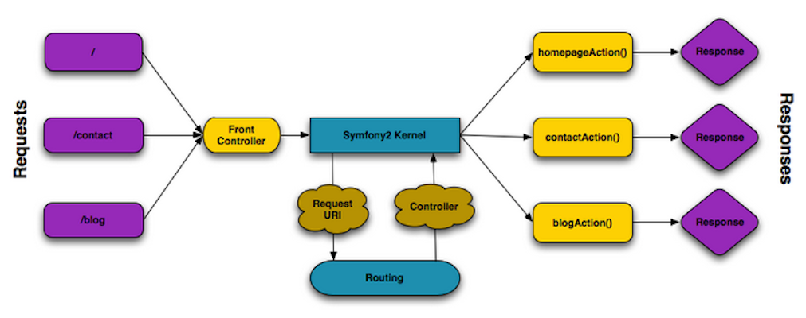

Introduction to Symfony2: Getting Ready for D8
Symfony 2 workshop
If you don't have the project running and see this screen, you're not ready to start!
Setup instructions: http://bit.ly/dcon-sf-setup

And ask us for help! :)
- Our goal is to leave no development behind
- Milestons as separate branches
- If you $git -f checkout
But first, some basics
The HTTP Lifecycle
Communication on the web is always a two step process:
- The client sends an HTTP request
- The server send back an HTTP response
The Request
GET /foo HTTP/1.1
Host: yourdomain.com
Accept: text/html
User-Agent: Mozilla/5.0 (Macintosh)
This simple message communicates everything necessary about exactly which resource the client is requesting
The Response
HTTP/1.1 200 OK
Date: Tue, 04 Jun 2011 21:05:05 GMT
Server: lighttpd/1.4.19
Content-Type: text/html
Foo!
HTTP Request-Response
In every application, and every language, you always have the same goal:
To read the HTTP request and create the appropriate HTTP response
Request and Response in PHP
- PHP gives you access to the HTTP request via several “superglobal” arrays.
- To create the HTTP response, use the the header() method to set the header lines and print content to populate the request body.
Request and Responses in Symfony
- Symfony offers a Request and Response objects that abstract the HTTP text messages into an object-oriented format.
- The main goal of the framework is to return a response in a optimized and effective way therefore we may say Symfony2 is an HTTP framework, it’s a Request/Response framework.
The Symfony Application Flow
PHP Namespaces
PHP Classes
By default, a PHP class is identified by its name, which must be unique within your project
class Product
{
private $foo = 'bar';
public function __construct()
{
...
}
}
Referencing a non-namespaced class
This type of class has no namespace. It can be referenced in two different ways
// works sometimes
$product = new Product();
// works always
$product = new \Product();
PHP Namespaces
Are a way of encapsulating items. Bringing the ability to organize and group related classes and also to avoid name collision.
namespace DrupalCon\FirstBundle\Entity;
class Product {
// ...
}
Referencing a namespaced class
A namespaced class can be referenced in two different ways.
// reference by its fully-qualified name
$product = new DrupalCon\FirstBundle\Entity\Product();
// import the namespace to file
use DrupalCon\FirstBundle\Entity\Product;
$product = new Product();
What is Symfony
Symfony is a group of standalone components and other standalone PHP libraries.
Ready to Code?
Remove the AcmeDemoBundle
- Remove Bundle registration (app/AppKernel.php)
- Remove routing reference (app/config/routing_dev.yml)
- Remove directories (src/Acme)
Remove AcmeDemoBundle registration
app/AppKernel.php
use Symfony\Component\HttpKernel\Kernel;
use Symfony\Component\Config\Loader\LoaderInterface;
class AppKernel extends Kernel
{
public function registerBundles()
{
...
if (in_array($this->getEnvironment(), array('dev', 'test'))) {
- $bundles[] = new Acme\DemoBundle\AcmeDemoBundle();
...
Remove routing reference
app/config/routing_dev.yml
# AcmeDemoBundle routes (to be removed)
_acme_demo:
resource: "@AcmeDemoBundle/Resources/config/routing.yml"
Remove directories
$ rm -rf src/Acme
Broken site

No route found for "GET /"
404 Not Found - NotFoundHttpException
Create the Bundle
- Create the directory (src/DrupalCon/FirstBundle)
- Create the Bundle Class here (FirstBundle.php)
- Register the Bundle in the AppKernel
Create the Bundle Class
src/DrupalCon/FirstBundle/FirstBundle.php
<?php
namespace DrupalCon\FirstBundle;
use Symfony\Component\HttpKernel\Bundle\Bundle;
class FirstBundle extends Bundle
{
}
Register the Bundle
app/AppKernel.php
use Symfony\Component\HttpKernel\Kernel;
use Symfony\Component\Config\Loader\LoaderInterface;
class AppKernel extends Kernel
{
public function registerBundles()
{
$bundles = array(
...
new DrupalCon\FirstBundle\FirstBundle(),
);
...
Create a Hello Page
- Import the route
- Create the route
- Create the Controller Class
http://bit.ly/sf2-CreatingPages (step 1 and 2)
Import the Route
app/config/routing.yml
firstbundle:
resource: "@FirstBundle/Resources/config/routing.yml"
prefix: /
Create the Route
src/DrupalCon/FirstBundle/Resources/config/routing.yml
hello_plain:
path: /
defaults: { _controller: FirstBundle:Hello:index }
Create the Controller Class
src/DrupalCon/FirstBundle/Controller/HelloController.php
<?php
namespace DrupalCon\FirstBundle\Controller;
use Symfony\Component\HttpFoundation\Response;
class HelloController
{
public function indexAction()
{
return new Response('<html><body><h1>Hello World</h1></body></html>');
}
}
Render a Template
- Extend Controller
- Return a response rendering template
- Create the Template file
http://bit.ly/sf2-CreatingPages (step 3)
Extend Controller
src/DrupalCon/FirstBundle/Controller/HelloController.php
use Symfony\Bundle\FrameworkBundle\Controller\Controller;
...
class HelloController extends Controller
{
...
Return a response rendering template
src/DrupalCon/FirstBundle/Controller/HelloController.php
public function templateAction()
{
return $this->render('FirstBundle:Hello:template.html.twig');
}
src/DrupalCon/FirstBundle/Resources/config/routing.yml
hello_template:
path: /template
defaults: { _controller: FirstBundle:Hello:template }
Create the Template file
src/DrupalCon/FirstBundle/resources/views/Hello/template.html.tiwg
{% extends "::base.html.twig" %}
{% block title %}Render a Template{% endblock %}
{% block body %}
You just successfully render a template
{% endblock %}
Render Template & pass paramater
src/DrupalCon/FirstBundle/Controller/HelloController.php
use Sensio\Bundle\FrameworkExtraBundle\Configuration\Template;
...
/**
* @Template()
*/
public function indexAction($name)
{
return [
'name'=>$name
];
}
src/DrupalCon/FirstBundle/Resources/config/routing.yml
hello_name:
path: /hello/{name}
defaults: { _controller: FirstBundle:Hello:index }
Create a CRUD
- Generate an Entity named Product
- Generate a CRUD
- Create Database and Schema
Generate entity
$ php app/console doctrine:generate:entity
The Entity Shortcut Name: FirstBundle:Product
Configuration Format: annotation
Fields:
-- name: name
-- type: string
-- length: 255
-- name: price
-- type: float
hit enter wildly!!! Woh!
(i.e. agree to the default values for everything else)
(if you mess up ctrl + c and start again)
Generate CRUD
$ php app/console doctrine:generate:crud
Entity Shorcut name: FirstBundle:Product
Generate write actions: yes
hit enter wildly!!! Woh!
(i.e. agree to the default values for everything else!)
add these lines to import the routes
# app/config/routing.yml
# ...
firstbundle_product:
resource: "@FirstBundle/Controller"
type: annotation
Create Database and Schema
$ php app/console doctrine:database:create
$ php app/console doctrine:schema:create
Database settings are in config parameters file (app/config/parameters.yml)
Return a JSON Object
- Make a /product/{id}.json endpoint
- Copy the showActionJson method to the *top* of your ProductController: http://bit.ly/dcon-sf-json
Create a "Service"
- Create a ProductSerializer class
- Give it a serialize method:
class ProductSerializer { public function serialize($product) { // copy the code to turn the Product // object into JSON return $json; } } - Instantiate the ProductSerializer in your controller and use it.
Register a service
-
Register your class as a service
# app/config/config.yml services: my.product_serializer: class: DrupalCon\FirstBundle\Service\ProductSerializer arguments: [] - Use the service in your controller
// src/DrupalCon/FirstBundle/Controller/ProductController.php public function showJsonAction($id) { // ... $productSerializer = $this->container ->get('my.product_serializer'); $json = $productSerializer->serialize($product); return new Response($json); }
Dependency Injection!
class ProductSerializer
{
private $router;
public function __construct(Router $router)
{
$this->router = $router;
}
public function serialize(Product $product)
{
$data = array(
// ...
'url' => $this->router->generate('product_show', array('id' => $product->getId()))
);
return json_encode($data);
}
}
# app/config/config.yml
services:
my.product_serializer:
class: DrupalCon\FirstBundle\Service\ProductSerializer
arguments: ["@router"]Drupal 8 module
Drupal 8 console
The purpose of this project is to leverage the Symfony Console Component to provide a CLI tool to automate the creation of Drupal 8 modules.
The purpose of this project is to leverage the Symfony Console Component to provide a CLI tool to automate the creation of Drupal 8 modules.
Where do I find the project?
Do you have a Drupal user ?
https://drupal.org/project/console
Do you have a Github account ?
Code generators
$ bin/console generate:module
$ bin/console generate:controller
$ bin/console generate:form
$ bin/console generate:plugin:block
Create a Service
lorempixel.services.yml
parameters:
lorempixel.categories:
- 'abstract'
- 'animals'
- 'business'
- 'cats'
- 'city'
- 'food'
- 'nightlife'
- 'fashion'
- 'people'
- 'nature'
- 'sports'
- 'technics'
- 'transport'
services:
lorempixel.generator:
class: Drupal\lorempixel\LorempixelGenerator
arguments: ['@config.factory', %lorempixel.categories%]
tags:
- { name: lorempixel_generator }
Service Class
src/lorempixel/LorempixelGenerator.php
<?php
namespace Drupal\lorempixel;
use Drupal\Core\Config\ConfigFactory;
class LorempixelGenerator
{
protected $config;
protected $categories;
public function __construct(ConfigFactory $config, $categories) {
$this->config = $config;
$this->categories = $categories;
}
public function getImage($category = NULL, $width = NULL, $height = NULL){
$settingsForm = $this->config->get("lorempixel.settingsform_config");
$width = $width?$width:$settingsForm->get("width");
$height = $height?$height:$settingsForm->get("height");
if (!$this->isValidCategory($category))
$category = $settingsForm->get("category");
return ' . ') ';
}
private function isValidCategory($category = NULL) {
if ($category) {
return in_array($category, $this->categories);
}
return false;
}
private function getImageUrl($width, $height, $category)
{
$url = "http://lorempixel.com/{$width}/{$height}/{$category}";
return $url;
}
}
';
}
private function isValidCategory($category = NULL) {
if ($category) {
return in_array($category, $this->categories);
}
return false;
}
private function getImageUrl($width, $height, $category)
{
$url = "http://lorempixel.com/{$width}/{$height}/{$category}";
return $url;
}
}
Add new ImageController
lorempixel.routing.yml
lorempixel.image:
path: '/lorempixel/image/{category}'
defaults:
_content: '\Drupal\lorempixel\Controller\ImageController::image'
_title: 'Lorem Pixel Image Generator'
width: 0
height: 0
category: ''
requirements:
_permission: 'access content'
Calling the service
/**
* @param string $category
* @return string
*/
public function image($category) {
return $this->lorempixel_generator->getImage($category);
}
/**
* {@inheritdoc}
*/
public function build()
{
return [
'#markup' => $this->lorempixel_generator->getImage('cats', 140, 100),
];
}